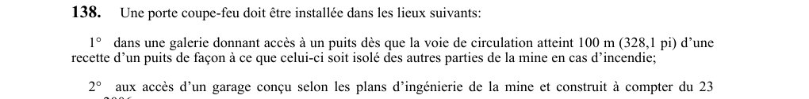

art-138-RSSM : portes coupe-feu galeries garages souterrains
Des portes coupe-feu doivent cloisonner les points chauds du souterrain, à commencer par les accès aux puits et aux garages.
- Fonction visée : isoler le puits du reste de la mine en cas d'incendie, donc couper la propagation par la voie de circulation.
- Galerie d'accès à un puits : la porte devient obligatoire dès que la voie de circulation atteint 100 m (328,1 pi) d'une recette de puits.
- Garages : les accès d'un garage conçu selon les plans d'ingénierie de la mine et construit à compter du 23 mars 2006 doivent en être munis.
- Réserve : la capture coupe en plein paragraphe 2 et la liste des lieux peut se poursuivre ; vérifier le PDF, page 48, avant de conclure qu'un lieu n'est pas visé.
🌐 LegisQuébec · 📄 PDF officiel
Texte officiel
Une porte coupe-feu doit être installée dans les lieux suivants:
1° dans une galerie donnant accès à un puits dès que la voie de circulation atteint 100 m (328,1 pi) d’une recette d’un puits de façon à ce que celui-ci soit isolé des autres parties de la mine en cas d’incendie;
2° aux accès d’un garage conçu selon les plans d’ingénierie de la mine et construit à compter du 23 mars 2006.
Cette porte doit être:
1° construite avec des matériaux incombustibles et avoir une résistance au feu d’au moins une heure;
2° dégagée de toute obstruction;
3° dotée d’un dispositif de fermeture automatique dans le cas d’un garage visé au paragraphe 2 du premier alinéa;
4° pourvue elle-même ou à son côté d’une petite porte pour la circulation ou l’évacuation des personnes.
Pour l’application du présent article, on entend par «garage», le lieu où s’effectuent l’entretien et la réparation mécanique des principaux équipements roulants, tels une foreuse à flèche et une chargeuse-navette.
Texte de l’article 138 RSSM, extrait de la couche texte du PDF officiel (page 48), sans OCR ni retouche. La capture ci-dessous et le PDF font foi.
{kind=link}

Toucher l'image pour l'agrandir🔗 Voir art. 138 RSSM dans le PDF (page 48)
Version : texte officiel du RSSM (RLRQ c. S-2.1, r. 14), à jour au 1er mai 2024 — Éditeur officiel du Québec
⚠️ Capture partielle : le texte de l'article se poursuit sous le bas de l'image. Consulter le PDF à la page indiquée avant de conclure qu'une exigence n'existe pas.
Voir aussi
- art. 136 : vérification mensuelle extincteurs systèmes extinction · obligation : l'état des extincteurs portatifs, des boyaux d'incendie et des systèmes d'extinction automatique ou semi-automatique doit être vérifié au moins une fois par mois.
- art. 137 : étiquette date vérification extincteurs boyaux · obligation : une étiquette indiquant la date de la dernière vérification et les initiales du travailleur l'ayant effectuée doit être apposée sur chaque extincteur, boyau d'incendie en service et système d'extinction automatique ou semi-automatique.
- art. 139 : structure ventilateur souterrain incombustible · obligation : la structure qui contient ou entoure un ventilateur assurant la ventilation sous terre doit être incombustible.
- art. 140 : distance bâtiment neuf et orifice · obligation : un bâtiment construit à compter du 1er avril 1993 doit être éloigné d'au moins 12 m (39,4 pi) d'un bâtiment couvrant l'orifice à la surface d'une mine souterraine, sauf si les deux bâtiments sont construits avec des matériaux incombustibles.
- ⚖️ Loi habilitante : LSST
- ↑ Index du bloc : Soutènement
Pages qui pointent ici (5)
- art-136-RSSM : vérification mensuelle extincteurs systèmes extinction Recueil législatif
- art-137-RSSM : étiquette date vérification extincteurs boyaux Recueil législatif
- art-139-RSSM : structure incombustible du ventilateur souterrain Recueil législatif
- art-140-RSSM : 12 m entre bâtiment neuf et orifice Recueil législatif
- RSSM : Soutènement (art. 131 à 160) Recueil législatif